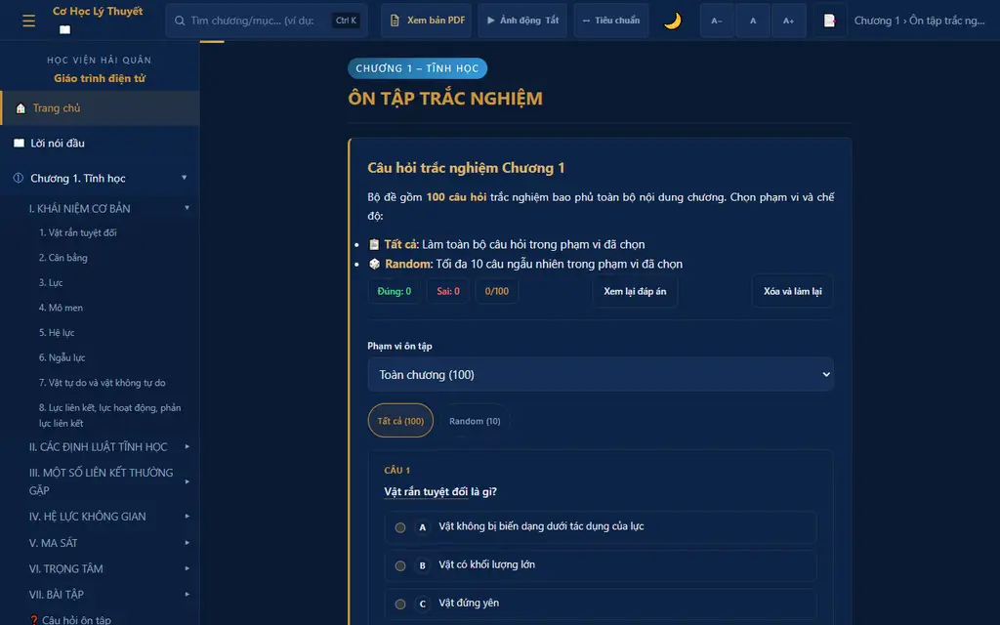
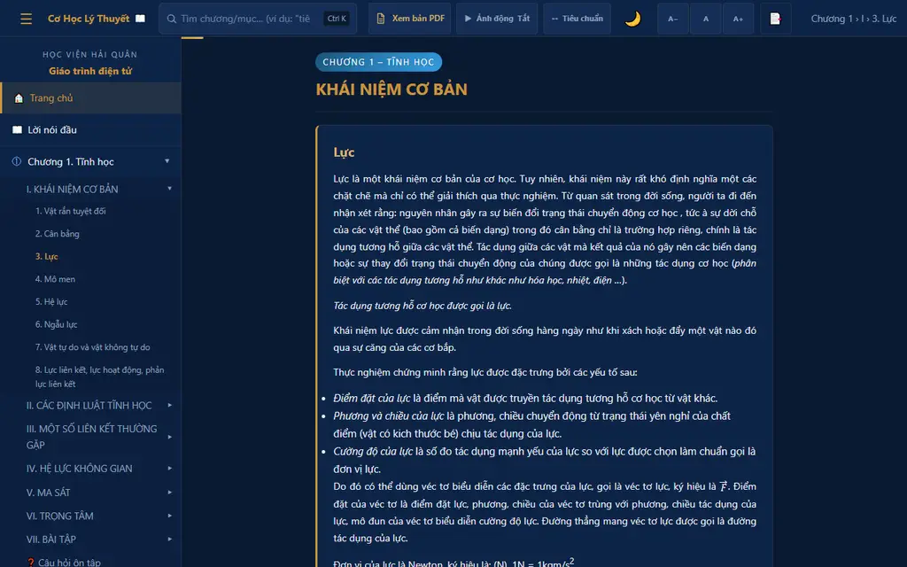

Gói phát hành chứa 372 tệp, nén thành ZIP 75.1 MB. Chạy hoàn toàn offline qua file://, USB, hoặc static server — không cần kết nối Internet.
| Thành phần | Công nghệ | Vai trò |
|---|---|---|
| Frontend | HTML/CSS/JS thuần | Chạy offline, không framework, không build step |
| Công thức | KaTeX (bundled) | Render toán học ký hiệu vector, ma trận, tích phân |
| Mô phỏng 2D | SVG + Canvas 2D API | 25 mô phỏng tương tác: lực, mô men, chuyển động |
| Mô phỏng 3D | Three.js (pilot) | 10 mô phỏng 3D bổ sung, fallback về Sim2 |
| pdf.js (vendor bundle) | Xem bản PDF offline trong dialog toàn màn hình | |
| Đánh giá | Quiz engine JS | Trắc nghiệm 100 câu, random mode, persistence |
| LMS | QTI 3.0 + CC 1.4 | Tích hợp hệ thống quản lý học tập |
| Kiểm thử | Playwright + Node.js test runner | 24 cổng QA tự động + smoke test |
| Yếu tố | Quy ước | Đánh giá |
|---|---|---|
| Bảng màu nền | Dark navy: #091a33, #0d2447, #142e56 | ✓ Nhất quán |
| Accent chính | Gold: #c9963a, #dbb36a | ✓ Nổi bật, tương phản tốt |
| Màu chương | Ch1 ● xanh dương · Ch2 ● xanh lá · Ch3 ● tím | ✓ Phân biệt rõ ràng |
| Typography | Segoe UI/system, line-height thoáng, body serif-free | ✓ Dễ đọc |
| Responsive | Breakpoints: 900/768/560/320px | ✓ Không overflow ở mọi viewport |
| Focus ring | :focus-visible only, halo rõ ràng | ✓ WCAG 2.2 AA |
| Reduced motion | Tất cả animation có fallback | ✓ Tuân thủ |
Ảnh chụp từ browser smoke test trên gói phát hành 2026.09.02-candidate:


| Tầng | Routes | Canvas | SVG | Three.js | Overflow | Trạng thái |
|---|---|---|---|---|---|---|
| Sim (2D) | ch1-1-3, ch1-1-5, ch1-3-2, ch2-2-3, ch2-5-3, ch3-1-3 | 1 ✓ | 3 ✓ | — | 0 ✓ | PASS |
| Sim2 (SVG) | ch1-1-3, ch2-2-3, ch3-1-3 | 1 ✓ | 3 ✓ | — | 0 ✓ | PASS |
| Sim3 (3D) | ch1-1-3, ch2-2-3, ch3-1-3 | 1 ✓ | 3 ✓ | ✓ loaded | 0 ✓ | PASS |
Xác minh: headless Chromium, cả file:// và HTTP, viewport 1280×800 và 320×640.
| # | Cổng QA | Chủ sở hữu | Trạng thái |
|---|---|---|---|
| 1 | release-baseline-contract | Release engineering | PASS |
| 2 | phase-01-source-baseline | Content engineering | PASS |
| 3 | content-regression | Content engineering | PASS |
| 4 | quiz-schema | Assessment | PASS |
| 5 | quiz-browser | Assessment | PASS |
| 6 | equations | Content engineering | PASS |
| 7 | audit-strict | Content engineering | PASS |
| 8 | gif-release | Content engineering | PASS |
| 9 | sim-physics | Simulation engineering | PASS |
| 10 | sim-mount | Simulation engineering | PASS |
| 11 | sim-release | Simulation engineering | PASS |
| 12 | sim3-pilot | Simulation engineering | PASS |
| 13 | simulation-evidence-currentness | Simulation engineering | PASS |
| 14 | pdf-release | Content engineering | PASS |
| 15 | phase-08-accessibility | Accessibility | PASS |
| 16 | media-pilot | Content engineering | PASS |
| 17 | release-pipeline | Release engineering | PASS |
| 18 | release-candidate-inventory | Release engineering | PASS |
| 19 | lms-adapters | LMS integration | PASS |
| 20 | release-smoke-review (technical) | Release engineering | PASS |
| 21 | accessibility-independent-review | Accessibility | BLOCKED |
| 22 | academic-review-currentness | Academic review | BLOCKED |
| 23 | word-standalone-roundtrip | Content engineering | BLOCKED |
| 24 | release-independent-smoke | Release engineering | BLOCKED |
Yêu cầu giảng viên Cơ Học Lý Thuyết (Học viện Hải quân) xác nhận nội dung khoa học chính xác, cập nhật, phù hợp chương trình đào tạo. Cần con người — không tự động hóa được.
Yêu cầu đánh giá độc lập WCAG 2.2 AA bởi chuyên gia accessibility ngoài nhóm phát triển. Axe automated scan đã pass; cần manual audit keyboard, screen reader, cognitive.
Kiểm tra khả năng chuyển đổi ngược HTML → DOCX. Cần xác nhận fidelity bảng, công thức, hình ảnh trong tệp Word xuất ra so với bản gốc.
Yêu cầu người dùng thực tế (giảng viên/sinh viên) mở gói offline, thao tác quiz/sim/PDF, ghi nhận môi trường (browser, OS) và xác nhận hoạt động bình thường.
| Tiêu chuẩn | Phiên bản | Kết quả | Ghi chú |
|---|---|---|---|
| QTI 3.0 | Pilot 10 items | PASS | SHA-256: ea1c16f...b1f08 |
| Common Cartridge | 1.4.0 | PASS | 375 files, 78.7 MB, byte-for-byte reproducible |
| LMS Targets Contract | v1 | PASS | Schema, adapter identity, staging contract verified |
Lưu ý quan trọng: Các gói LMS chỉ xác nhận tính hợp lệ kỹ thuật (schema, hash, reproducibility). Việc import và sử dụng thực tế trên Moodle/Canvas/Blackboard cần kiểm tra riêng trên từng nền tảng.
| Tiêu chí | Phương pháp | Kết quả |
|---|---|---|
| WCAG 2.2 AA (axe-core) | Automated scan mọi route | PASS |
| Keyboard navigation | Playwright flow: Tab, Enter, Escape, Arrow | PASS |
| ARIA landmarks | banner, navigation, main, search, contentinfo | PASS |
| Zoom/reflow 200% | Viewport scale, no horizontal scroll | PASS |
| Color contrast | Baseline ratios verified against WCAG AA | PASS |
| Skip navigation | "Bỏ qua điều hướng đến nội dung chính" | PASS |
| Independent review | Manual audit bởi chuyên gia | BLOCKED |
| Thuộc tính | Giá trị |
|---|---|
| Phiên bản | 2026.09.02-candidate |
| Build epoch | 1788307200 (2026-09-02 UTC) |
| Package SHA-256 | 3defec1306bab10288faed66e45f19d8aa2befc2b66ecb1b6f2066df186f005a |
| Manifest SHA-256 | 9b5d87e9f4dc8e84207aef2511e532baf1095d20a5af76fc8c6c8732eb398e3f |
| Kích thước | 78,739,543 bytes (75.1 MB) |
| Số tệp staging | 372 |
| Reproducibility | Byte-for-byte deterministic (đã xác minh) |
file:// (offline)python -m http.server 8123THREE global loaded, zero overflowGiáo trình điện tử đạt 20/24 cổng QA tự động (83.3%). Không có cổng nào thất bại. 4 cổng bị chặn đều yêu cầu can thiệp con người — không phải lỗi kỹ thuật.
file://, USB, không cần server